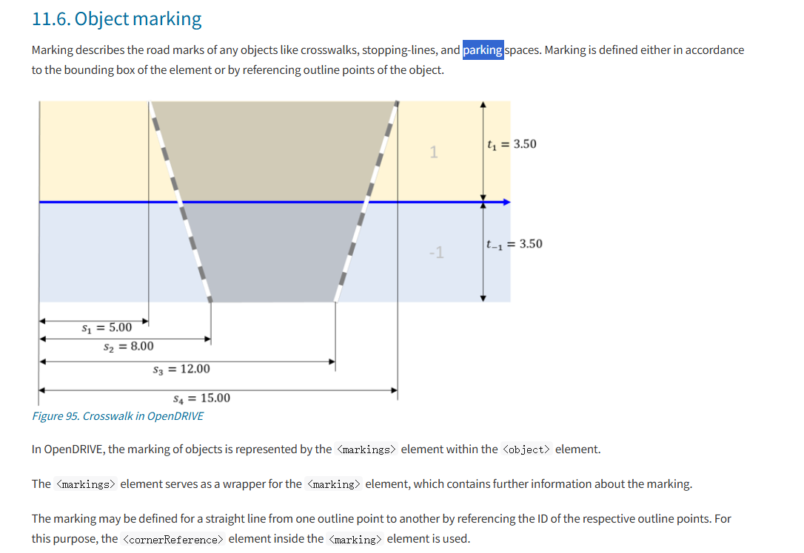
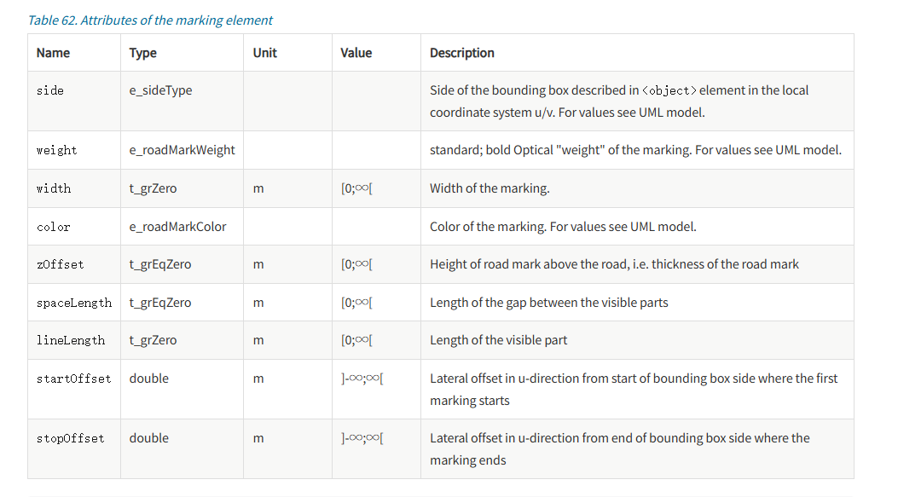
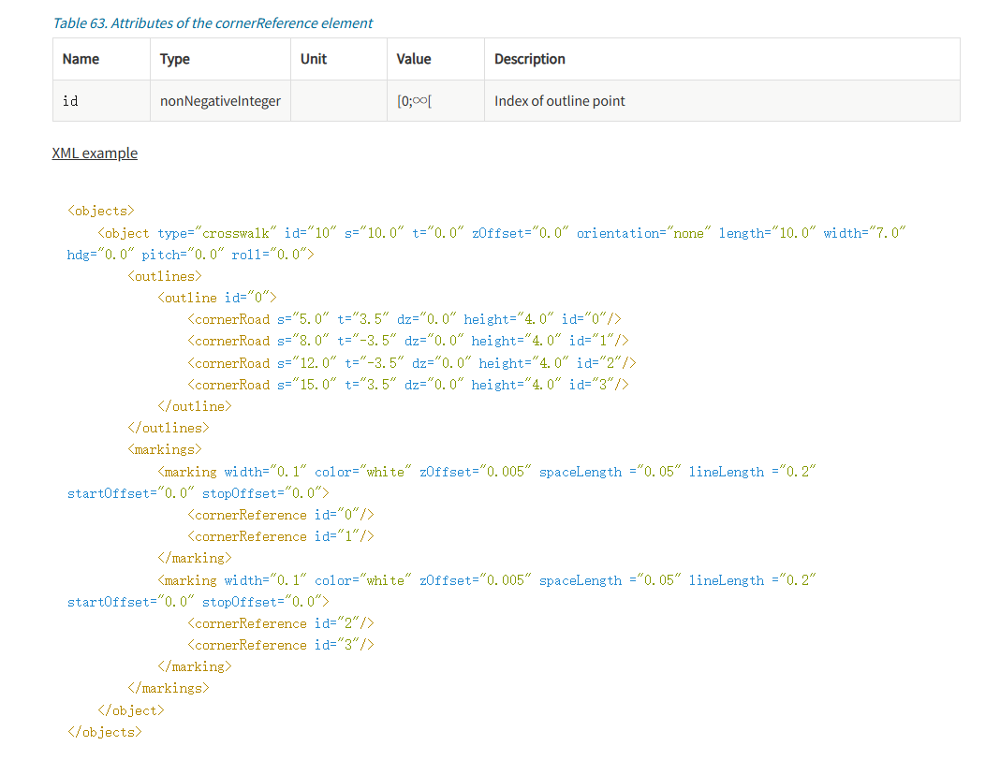
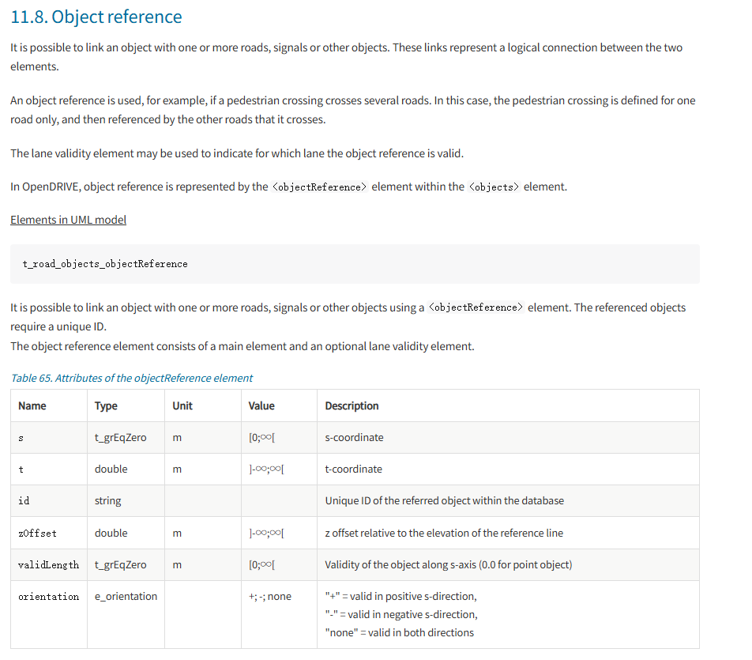

OpenDRIVE において、横断歩道や停止線などの「物体マーキング」はどのように記述されるか？
道路上の非車線平面マーキングについて、OpenDRIVE では <object> 要素内の <markings> 要素を通じて定義されます：
Bounding Box（境界ボックス）に基づく方法と、Outline Points（輪郭点）を参照して詳細にモデリングする方法の2つのモードをサポートしています。<cornerReference> 要素によって物体の輪郭点 id を参照し、点と点をつなぐ直線や複雑なマーキング形状を定義します。
OpenDRIVE で「物体マーキング (Marking)」を記述する際の主要な必須属性は何か？
表に示すように、路面マーキング（破線、実線、横断歩道など）を正確に表現するために、OpenDRIVE では一連の標準化された属性が定義されています：
side (境界位置)、width (線幅)、color (色)、weight (太さ等級) がマーキングの基本的な見た目を決定します。zOffset (マーキングの厚み)、lineLength (実線部分の長さ)、spaceLength (破線の間隔) により、マーキングの 3D 幾何学的特性が構築されます。startOffset および stopOffset は、境界ボックスに対するマーキングの横方向の開始点と終了点のオフセットを定義し、これは正確な配置とセグメント化されたレンダリングを実現するために極めて重要です。
cornerReference を使用して複雑な路面マーキング形状を構築するにはどうすればよいか？
XML の例に示すように、OpenDRIVE では事前に定義された outline 点を参照することで、高精度な幾何構造を実現しています：
cornerReference 要素は id 属性を通じて outlines で定義された cornerRoad 点を直接参照します。
OpenDRIVE において、複数の道路にまたがる物体 (Object Reference) を関連付けるにはどうすればよいか？
横断歩道のように複数の車線や道路にまたがる物体に対して、OpenDRIVE は <objectReference> 要素を使用して論理的な接続を確立します：
ID を参照することで、重複したモデリングを回避します。laneValidity 要素を組み合わせることで、開発者はその参照がどの車線区間で有効かを正確に指定でき、複雑な交差点モデリングの効率と保守性が大幅に向上します。